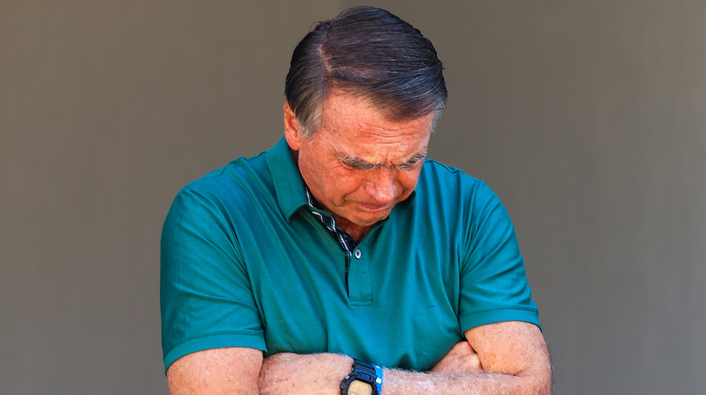

Eleições, governo, leis e a política que impacta Guarulhos e o Brasil.
Atual presidente da República, Lula busca o 4º mandato. Lidera todas as pesquisas mas enfrenta aprovação estagnada e polarização intensa.
SituaçãoIndicado pelo pai Jair Bolsonaro como candidato da direita, representa o legado bolsonarista. Lidera a oposição nas pesquisas com cerca de 36%.
OposiçãoEmbora não confirmado, Tarcísio é apontado como alternativa da centro-direita ao bolsonarismo. Sua decisão sobre candidatar-se define o cenário eleitoral.
IndefinidoRepresentante da direita liberal, Zema oficializou sua pré-candidatura e busca um espaço entre o PT e o PL no espectro político nacional.
OposiçãoCaiado declarou pré-candidatura e tenta atrair os eleitores do agronegócio e da direita moderada que buscam uma opção além de Flávio Bolsonaro.
OposiçãoGovernador popular com boa aprovação no Paraná, surge como nome do PSD para o centro-direita. Aparece com cerca de 9% nas pesquisas nacionais.
Oposição
Em setembro de 2025, o STF condenou Jair Bolsonaro por organização criminosa, tentativa de golpe e abolição do Estado Democrático de Direito.

O governador de São Paulo ainda não confirmou se disputará o Palácio do Planalto ou renovará o mandato no estado, dividindo estrategistas da direita.

A chapa única "Guarulhos Forte" foi eleita por unanimidade com 34 votos, tendo Martello (Republicanos) como presidente da Casa Legislativa.